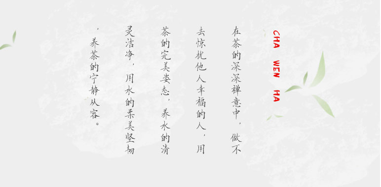

中国是茶的故乡，也是茶文化的发源地。中国茶的发现和利用已有四千七百多年的历史，且长盛不衰，传遍全球。茶是中华民族的举国之饮，发于神农，闻于鲁周公，兴于唐朝，盛于宋代，普及于明清之时。中国茶文化糅合佛、儒、道诸派思想，独成一体，是中国文化中的一朵奇葩！中国茶区辽阔，茶区划分采取3个级别，即一级茶区（以西南、江南地区为表），二级茶区（以西北、江北），三级茶区（以华南地区为代表）。同时，茶也已成为全世界最大众化、最受欢迎、最有益于身心健康的绿色饮料。茶融天地人于一体，提倡“天下茶人是一家”。 [2]
茶文化的内涵其实就是中国文化的内涵的一种具体表现和中国文化而论之。中国素有礼仪之邦之称谓，茶文化的精神内涵即是通过沏茶、赏茶、闻茶、饮茶、品茶等习惯与中国的文化内涵和礼仪相结合形成的一种具有鲜明中国文化特征的一种文化现象，也可以说是一种礼节现象。礼在中国古代用于定亲疏，决嫌疑，别同异，明是非。在长期的历史发展中，礼作为中国社会的道德规范和生活准则，对中国精神素质的修养起了重要作用；同时，随着社会的变革和发展，礼不断被赋予新的内容，和中国的一些生活中的习惯与形式相融合，形成了各类中国特色的文化现象。茶文化是中国具有代表性的传统文化。中国不仅是茶叶的原产地之一，而且，在中国不同的民族，不同的地区，至今仍有着丰富多样的饮茶习惯和风俗。
种茶、饮茶不等于有了茶文化，仅是茶文化形成的前提条件，还必须有文人的参与和文化的内涵。唐代陆羽所著《茶经》系统的总结了唐代以及唐以前茶叶生产，饮用的经验，提出了精行俭德的茶道精神。陆羽和皎然等一批文化人非常重视茶的精神享受和道德规范，讲究饮茶用具、饮茶用水和煮茶艺术，并与儒、道、佛哲学思想交融，而逐渐使人们进入他们的精神领域。在一些士大夫和文人雅士的饮茶过程中，还创作了很多茶诗，仅在《全唐诗》中，流传至今的就有百余位诗人的四百余首，从而奠定中国茶文化的基础。
茶为一种植物，可食用、解百毒、长品易健康、长寿，茶品顺为最佳、还可作药用，所以就有一句茶乃天地之精华，顺乃人生之根本。因此道家里有茶顺为茗品。bajiezhan.com